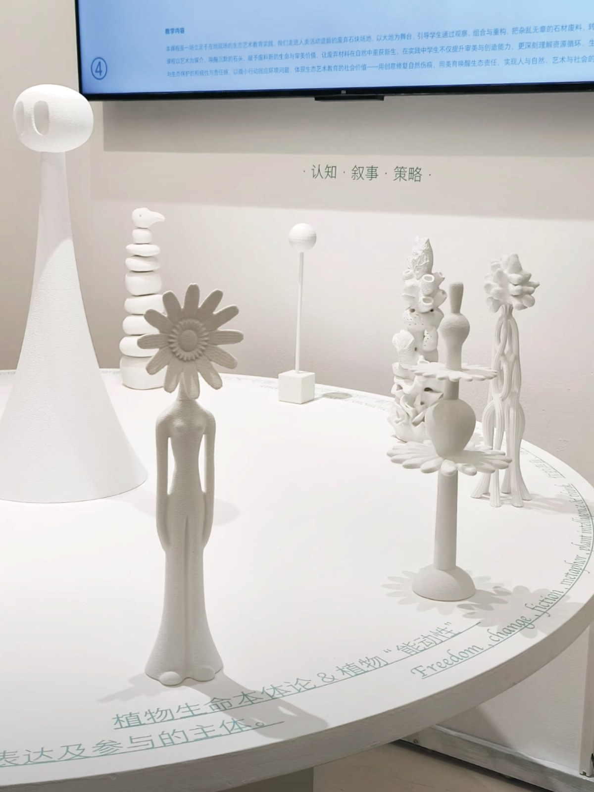
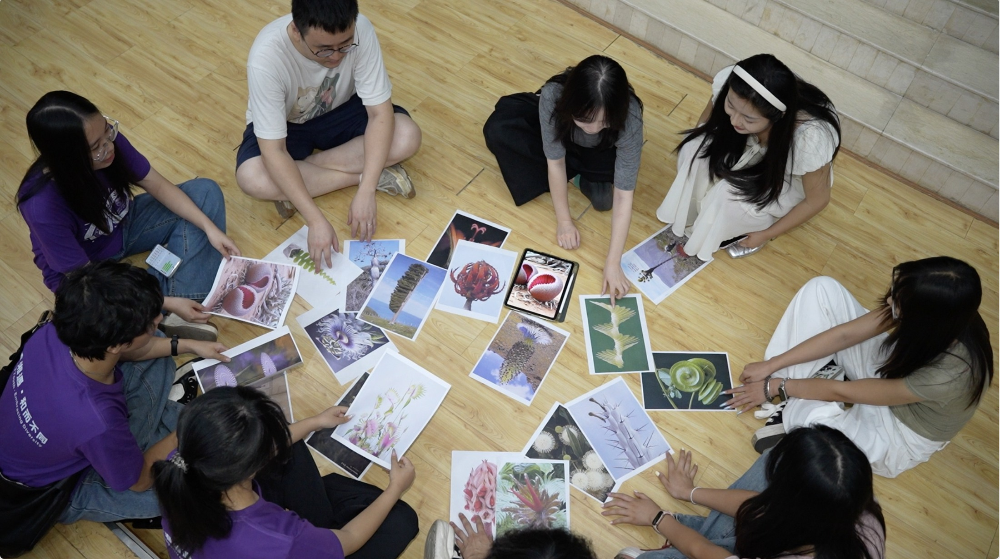
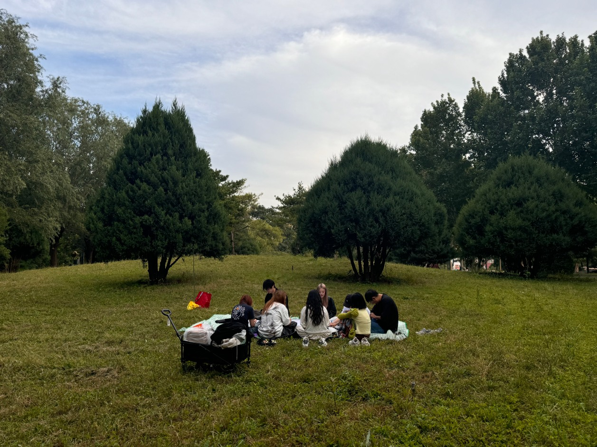
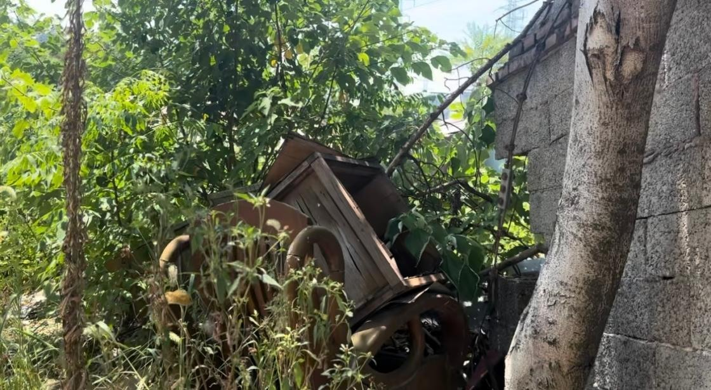
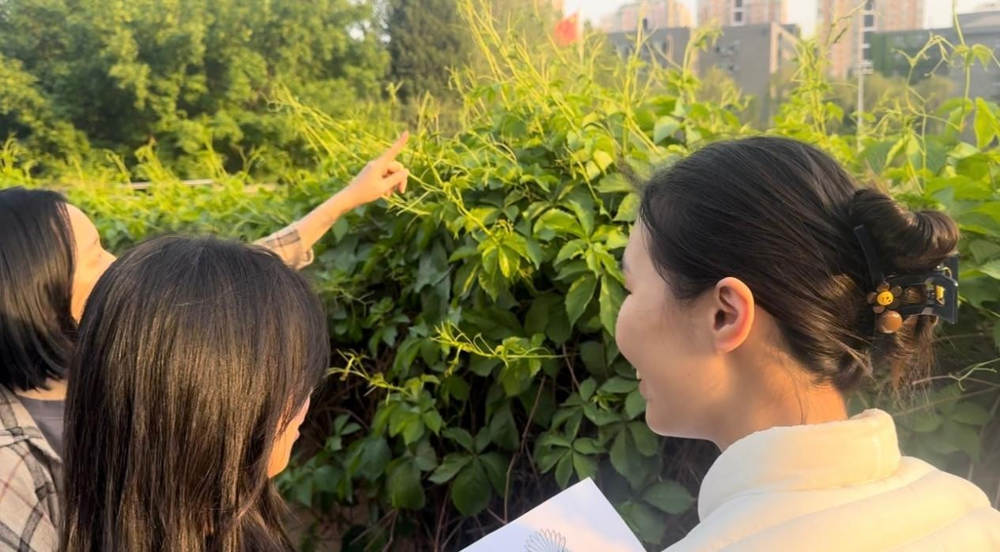
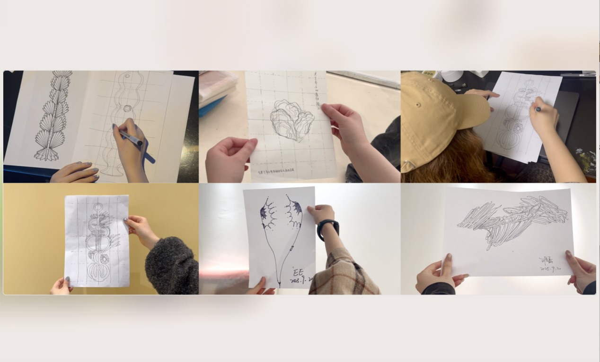
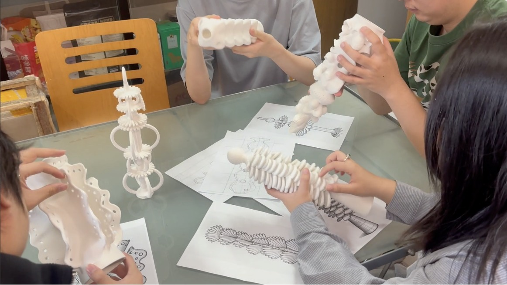

Rethinking Ecological Art Education through Plants as a Medium: A Practice-Based Study.
The Plant Cup
Learning with living plants through embodied observation, material experimentation, and collective making.
Abstract
As ecological crises intensify and sustainability becomes a shared global concern, ecological art education increasingly incorporates engagement with nature and society. Yet teaching practices can still objectify natural beings or rely on formulaic activities, reducing living organisms to visual references, symbols, or materials. Grounded in plant philosophy and the ontology of plant life, this study reviews existing approaches to ecological art education and proposes a teaching pathway that treats plants as a medium.
The study develops a model with four interconnected dimensions: pedagogical philosophy, teaching relationships, curriculum content, and practice modules. The curriculum moves through three themes: perceiving and responding to plant life signals; narrating and participating in growth processes; and observing and experiencing survival strategies. Perceptual guidance, embodied participation, and the co-creation of learning situations support sustained, multidimensional encounters with plants. The teaching practice suggests that making plants a central variable can shift learning from outcome-oriented production toward process-oriented participation, opening artistic practice to interspecies collaboration and greater sensitivity to ecological relationships.
This approach expands the possibilities of ecological art education. By attending to the agency, subjectivity, and temporality of plant life, it moves beyond human-centered observation and production toward cultural participation grounded in multispecies coexistence. It offers methodological insights for ecological art education within foundational design and contemporary art curricula, while extending the role of art education in ecological ethics and cultural transformation.
Keywords: Ecological art education; plants as a medium; teaching practice; human–nature relationships; ecological awareness

Plants as participants
What changes when plants become participants in art education? Developed through my master’s research, The Plant Cup brings plant agency, growth, and environmental adaptation into the classroom.
A curriculum of attention
I designed and led a plant-centered workshop for 20 undergraduate students. Activities moved through three themes: perceiving and responding to plant signals, participating in growth processes, and observing survival strategies. Conceptual translation, situated experiments, and outdoor practice connected these themes to art-making.
Collective making
The project brought ecological observation, material experiments, and artistic production into a shared process. Its final presentation included twelve speculative plant forms responding to social and environmental questions. These works were developed through collective practice; the photographs document the workshop and its exhibition.
Research foundation
The project explores ecological art education through plants as a medium. Supervisors: Qiang Yong, Sun Cong, and Fu Aichen.
01 / Research questions
What changes when plants shape the learning process?
The inquiry addresses the tendency to reduce nature to visual references or materials, and the limits of predetermined teaching activities.
How can plant signals, growth, and adaptation inform the design of ecological art education?
How might encounters with plants reshape students’ observation, participation, and artistic decisions?
What possibilities and limitations emerge when living processes introduce uncertainty into teaching?
Research logic
How the inquiry develops
The study moves from a critique of existing teaching approaches to a proposed framework, teaching practice, and reflective artistic translation.
01 / PROBLEM
Beyond visual representation
Examine the treatment of nature as an object and the limits of predetermined classroom activities.
02 / FRAMEWORK
Plants as a medium
Connect ecological art education and plant philosophy with teaching relationships, content, and practice.
03 / INQUIRY
Learning through encounters
Explore perception, embodied participation, and situated co-creation through teaching activities.
04 / REFLECTION
Revising and translating
Consider student work and feedback, identify limitations, and translate the inquiry into The Plant Cup.
Research sequence: problem, framework, inquiry, and reflection.
Theoretical foundation
Plant sensing and agency
Plant philosophy invites us to approach plants as living beings with their own ways of inhabiting the world, extending ethical attention beyond their usefulness to humans (Marder, 2013). Research on plant intelligence examines how plants sense environmental conditions and coordinate adaptive growth; Trewavas (2003) interprets these capacities in terms of adaptive problem-solving, while Mancuso (2018) emphasizes their distributed, modular organization.
For this project, these ideas inform three perspectives: structural agency—growth and regeneration through a modular body; sensory agency—responses to light, gravity, moisture, and touch; and behavioral agency—adjustments in growth and resource allocation. These perspectives guide activities in which students observe plant signals, follow growth over time, and respond through artistic practice. Here, agency describes responsiveness and adaptation; it does not presume human-like subjective consciousness, for which claims remain contested (Taiz et al., 2019).
The research examines limitations that can arise when nature is treated primarily as a visual reference. It proposes extending teaching toward living processes and reciprocal encounters.
Teaching shifts from observation-led instruction toward a dynamic learning community in which teachers, students, plants, and the surrounding natural environment shape the learning process together.
The spherical structure brings teaching principles, curriculum content, and practice modules into one relational model. Its connections indicate opportunities for interaction rather than a prescribed sequence of lessons.
Attend to plant characteristics through sensory observation and artistic response.
Action-oriented practice
Participate in material and environmental processes through situated making.
Situation-oriented practice
Explore ecological relationships through imagined environmental scenarios.
03 / Research methods
Design, observe, reflect, revise
The study combines theoretical inquiry with action research. Teaching practice provides a setting for examining the feasibility of the proposed approach and identifying changes needed in subsequent teaching.
Plan→Act→Observe→Reflect↺ Revise the plan
An iterative cycle of planning, teaching, observation, and reflection.
Literature review
Ecological art education, environmental aesthetics, and plant philosophy establish the conceptual basis for the teaching model.
Action research
Teaching modules are developed and enacted, then examined through student feedback, teaching logs, and reflection.
Case studies
Individual and group work is considered alongside teaching records and interviews to examine perception, creative decisions, and ecological understanding.
Artistic translation
The researcher’s creative practice translates pedagogical ideas and teaching outcomes into forms that can be encountered in an exhibition.
Connecting research materials with interpretation
Research material
Analytical focus
Contribution to reflection
Teaching records
How activities unfold and respond to environmental conditions.
Identify where the teaching sequence requires adjustment.
Student interviews and feedback
Participants’ descriptions of encounters with plants.
Consider shifts in attention alongside difficulties and differing experiences.
Student artworks
How observations and imagined scenarios become artistic decisions.
Examine the relationship between ecological observation and artistic interpretation.
04 / Teaching practice
Observation, participation, and imagined futures
The research brings together several teaching activities rather than a single uniform cohort. Perceptual inquiry at CAFA, place-based material practice, and future-scenario work contribute different perspectives to the overall framework.
Perception
Close observation and artistic translation make plant characteristics available for discussion.
Participation
Work with corn stalks and found stone explores how local material conditions shape artistic decisions.
Co-creation
Future environmental scenarios provide a starting point for imagining and designing speculative plant forms.

Exploring questions at the beginning of the course.

Learning with plants through outdoor observation.

Exploring the boundary between plants and urban life.

Observing the growth habits of Virginia creeper.
Teaching module / Future scenarios
Imagining future plant forms
Q1. How might plants adapt their forms in response to changing environmental conditions?
Q2. How might plants respond through changes in behavior, state, or life cycles when human activities alter the climate, transform habitats, or overexploit resources?
Stage 01
Developing a future scenario
Students develop an extreme future social scenario, reflecting on contemporary social changes and extending present conditions into possible futures.
Stage 02
Designing speculative plant forms
Students imagine materials, colors, and growth patterns in response to their scenario, using plant forms as metaphors for how humans may need to reposition themselves amid ecological crises.
The scenarios below bring together the students’ proposals.
Student-developed future social scenarios · Click image to enlarge.
Students developed their future plant forms through sketches and AI-assisted modeling, then produced the final forms through 3D printing for exhibition at the CAFA Art Museum.

Imagining future plant forms in relation to social issues.

Material experiments and collaborative making.
05 / Research reflections
What the practice made visible
Attention to process
Teaching observations suggest that students attended more closely to plant processes and environmental relationships. These observations suggest possibilities for process-oriented teaching; they do not establish a measured causal effect.
Uncertainty as a teaching condition
Plant growth and environmental change do not follow a classroom schedule. The research identifies a need for flexible activities and longer-term observation.
The limits of interpretation
Students may attribute human emotions or intentions to plants. Reflection therefore includes distinguishing artistic speculation from claims about plant experience.
Directions for further work
Longer teaching cycles, stronger ecological knowledge, and clearer evaluation procedures could help examine how these experiences develop over time.
06 / From research to exhibition
The Plant Cup
The Plant Cup translates the broader teaching inquiry into an exhibition. Moving images document the teaching process, while a circular text display and white sculptural forms bring speculative plant futures into a shared space.
Student-generated scenarios and designs inform the work. The installation is the researcher’s artistic response to this collective teaching process.